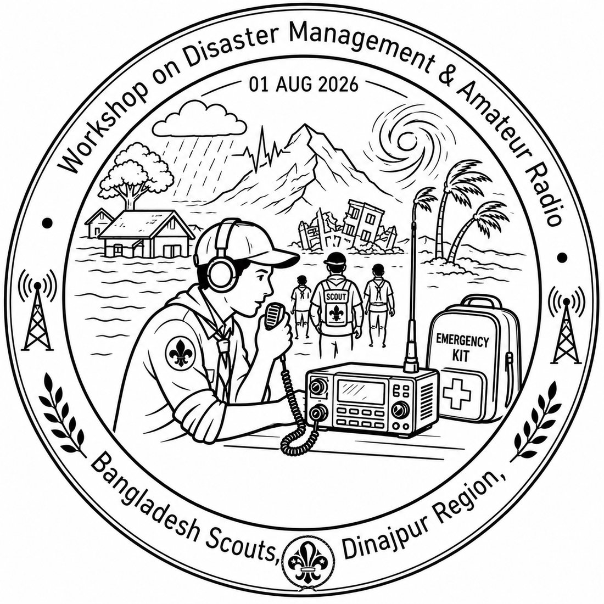
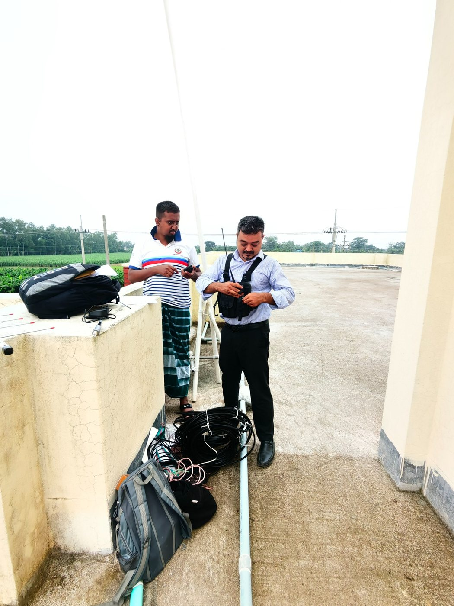
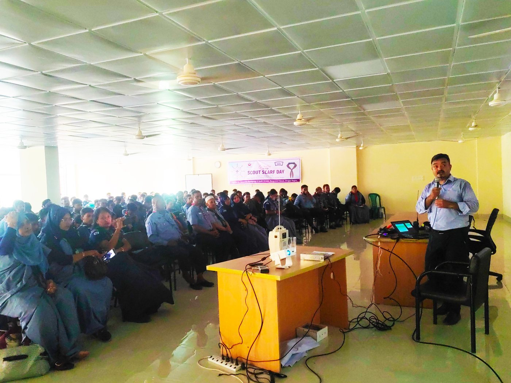
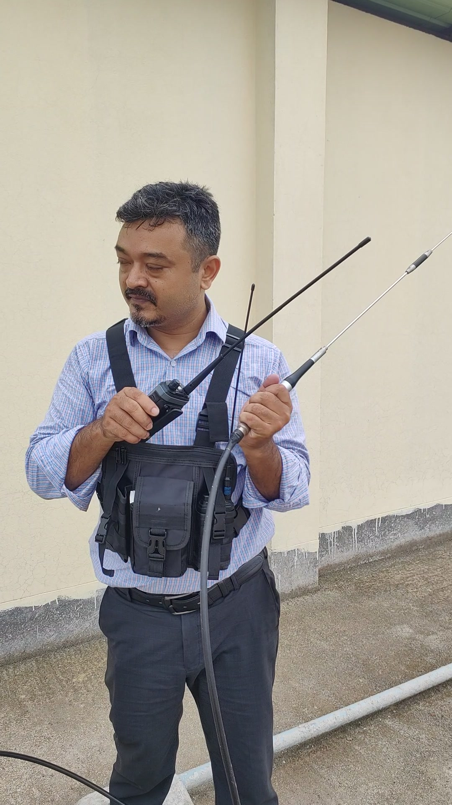
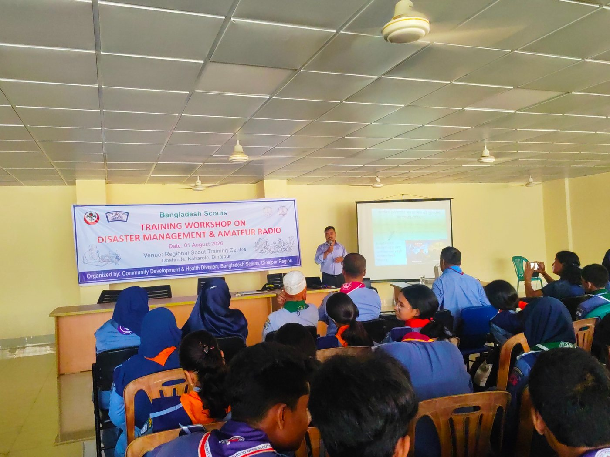
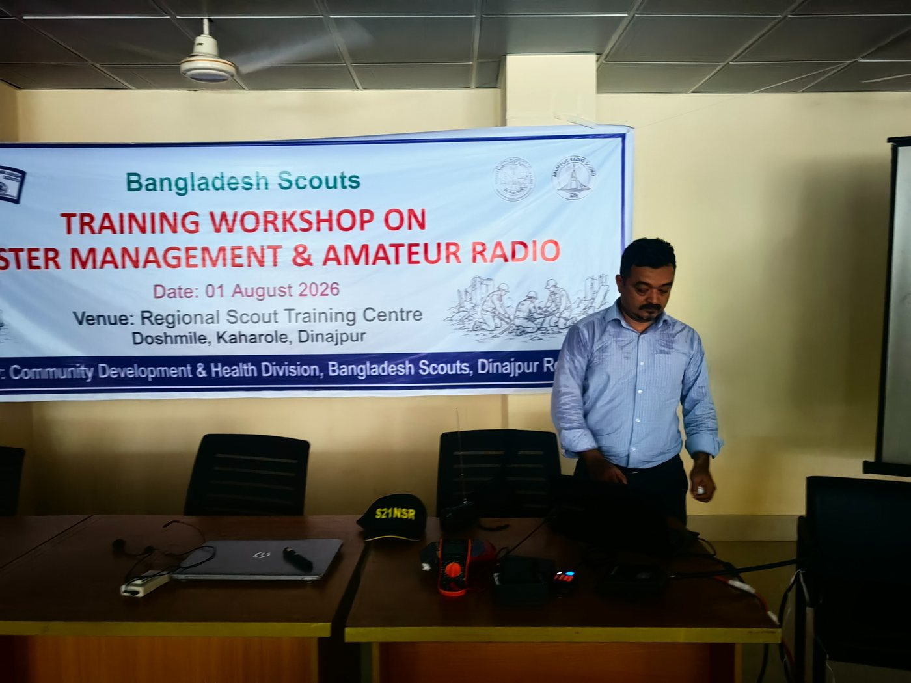
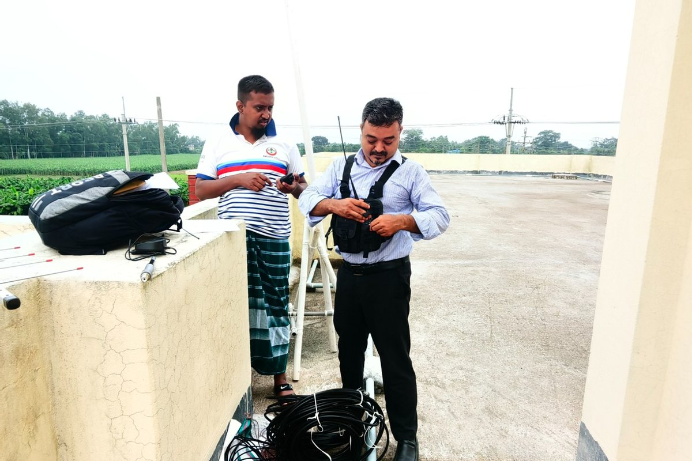

📡
Antennas
Yagi, dipole, EFHW and vertical antenna experiments, construction and measurement.
AMATEUR RADIO • BANGLADESH
A personal amateur-radio space for communication, antennas, practical experiments, emergency communication and sharing what I learn along the way.

ABOUT S21NSR
Amateur radio combines communication, electronics, RF engineering, public service and continuous learning. This site is my personal space to document radio activities, antenna work, workshops and experiments.
I enjoy exploring HF, VHF and UHF communication, building and testing antennas, learning digital and satellite techniques, and sharing practical knowledge with others.
RADIO & NETWORK
Yagi, dipole, EFHW and vertical antenna experiments, construction and measurement.
Voice communication, portable operation and practical RF experimentation across the bands.
Connect with S21NSR through AllStarLink Node 67293.
AllStarLink ↗Available for AllStarLink connections.
ACTIVITIES

Outdoor radio work with handheld equipment and antennas.

Presentations and practical sessions introducing students and learners to amateur radio.
GALLERY




CONTACT
For amateur-radio related communication, you can find S21NSR on QRZ and AllStarLink.